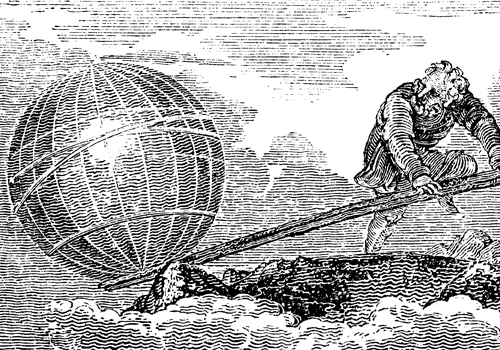

Цікаві дослідження
Скільки коштує людина?
Задумуючись над цим питанням, французькі фахівці з’ясували, що людське тіло вагою 70 кг містить 45 кг кисню, 12 – вуглецю, 7-водню, 2-азоту й трохи більше кілограма кальцію. Інші елементи таблиці Менделєєва представлені таким чином: 860 г фосфору, 300 г сірки, 210 – калію, 100 – натрію, 70 – хлору, а також кілька грамів магнію, заліза, фтору, цинку й міді. Йод, кобальт, марганець, молібден, хром і селенів обчислюються вже в міліграмах. У людини можна виявити сліди таких елементів, як ванадій, нікель, алюміній, свинець, олово, титан, бор, бром, миш’як і кремній. Виходячи із сучасних цін на чисті хімічні, вчені підрахували, що вартість «сировини», з якої складається Homo-sapiens, не перевищує 145 доларів США.
{kind=link}
Зайвого мозку не буває.
Існує стійкий міф про те, що людина використовує свій мозок усього лише на 10 %, а інші 90 – не використовуються. Це неправда. У природі взагалі немає нічого зайвого і, зокрема, ніякого «зайвого» мозку в нашій черепній коробці не виявлено. Дослідження показали, що протягом доби середньостатистична людина залучає практично всі ділянки мозку, просто це відбувається в різний час. Причому людина з більш розвиненим інтелектом при вирішенні проблеми використовує меншу кількість відділів мозку, ніж бовдур, який навіть для вирішення легкого завдання «приводить в рух» ледве не весь вміст черепної коробки.
{kind=link}
Головний мозок - вищий відділ нервової системи людини. У головному мозку розрізняють такі відділи: стовбур, мозочок та великий мозок. Великий мозок складається з двох півкуль (правої та лівої), з’єднаних мозолистим тілом, яке складається з нервових волокон. Через мозолисте тіло здійснюється зв'язок між обома півкулями. Зовні півкулі вкриті корою, утвореною сірою речовиною, що складається з тіл нейронів. Вона відповідає за сприйняття всієї інформації яка надходить у мозок, керує складними рухами. Кора - осередок усіх вищих функцій організму, носій людського інтелекту.
Людство з роками розумнішає!
До такого висновку прийшли вчені, які довгі роки регулярно проводили тести на інтелект в 20 країнах світу. Виявилося, що кожне наступне покоління людей розумніше попереднього на 5-25 одиниць IQ(коефіцієнт інтелекту), тільки от чому цього практично не помітно?
Чи зміг би Архімед підняти Землю?
{kind=link}
«Дайте мені точку опори, і я підніму Землю!» - такий вигук легенда приписує Архімеду, геніальному механіку давнини, який відкрив закон важеля.
« Одного разу Архімед, - читаємо ми в Плутарха, - написав сіракузькому царю Герону, якому він був родич і товариш, що довільною силою можна підняти будь – який вантаж. Захоплений силою доведення, він додав, що якби була б інша Земля, він, перейшов би на неї, і зрушив би з місця нашу». Архімед знав, що немає такого вантажу, якого не можна було б підняти найменшою силою, якщо використати важіль: досить лише прикласти цю силу до дуже довгого плеча важеля, а коротким плечем подіяти на вантаж. Тому він вважав, що, натискаючи на надзвичайно довге плече важеля, можна силою рук підняти і вантаж, маса якого дорівнює масі Землі. Але, якби великий механік древності знав, яка величезна маса Землі, він, напевно, не висловив би свого гордого вигуку.
Уявімо, що Архімеду дана та «друга Земля», та точка опори, яку він шукав, уявімо, що він виготував важіль потрібної довжини. То для того, щоб підняти Землю на 1 см, йому потрібно було б тридцять тисяч мільйонів років (3·1010років). Справді, маса Землі 6·1024кг,якщо людина безпосередньо може підняти лише 60 кг, то щоб «підняти Землю», йому потрібно прикласти силу рук до довгого плеча важеля, яке більше за коротке в 1023разів ( 6·1024/60 =1032)! Тоді, поки короткий кінець важеля підніметься на 1 см ( 0 ,01 м), то довгий пройде шлях 1021м ( 0 , 01м·1023=1021).Такий шлях повинна була пройти рука Архімеда, щоб « підняти Землю» на 1 см.
Скільки ж часу потрібно для цього?
Якщо вважати, що Архімед здатен підняти 60 кг на 1 см за 1 с, то для того підняття Землі на 1 см потрібно 1021с ( 1с·102= 1021с). Ніякі пристосування геніального винахідника не допомогли б йому зменшити цей час. « Золоте правило» механіки говорить, що виграш у силі призводить до втрати у часі . Навіть якби Архімед переміщував руку з найбільш можливою у природі швидкістю ( 3·108м/c ) , то й при цьому він « підняв би Землю» на 1 см лише за десять мільйонів років ( 106).